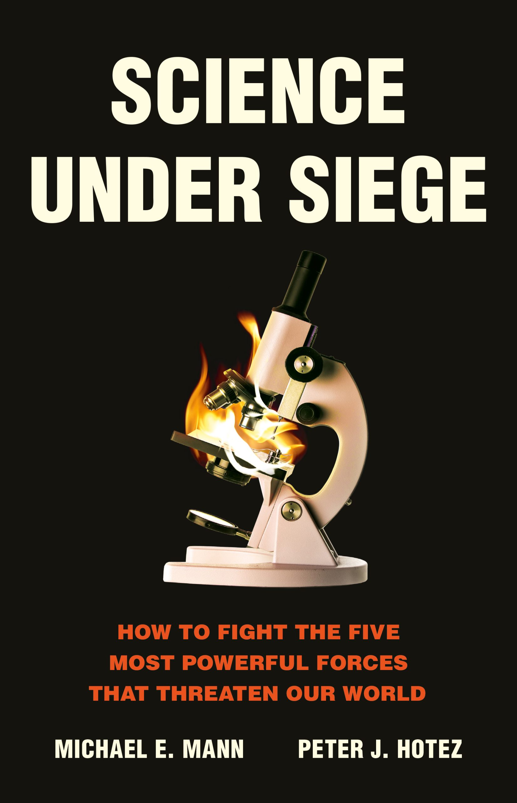
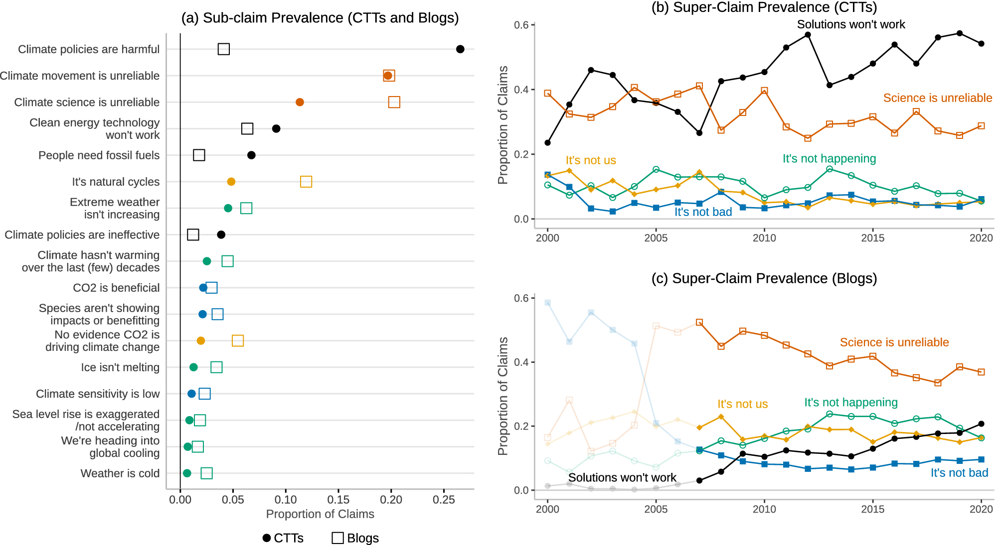
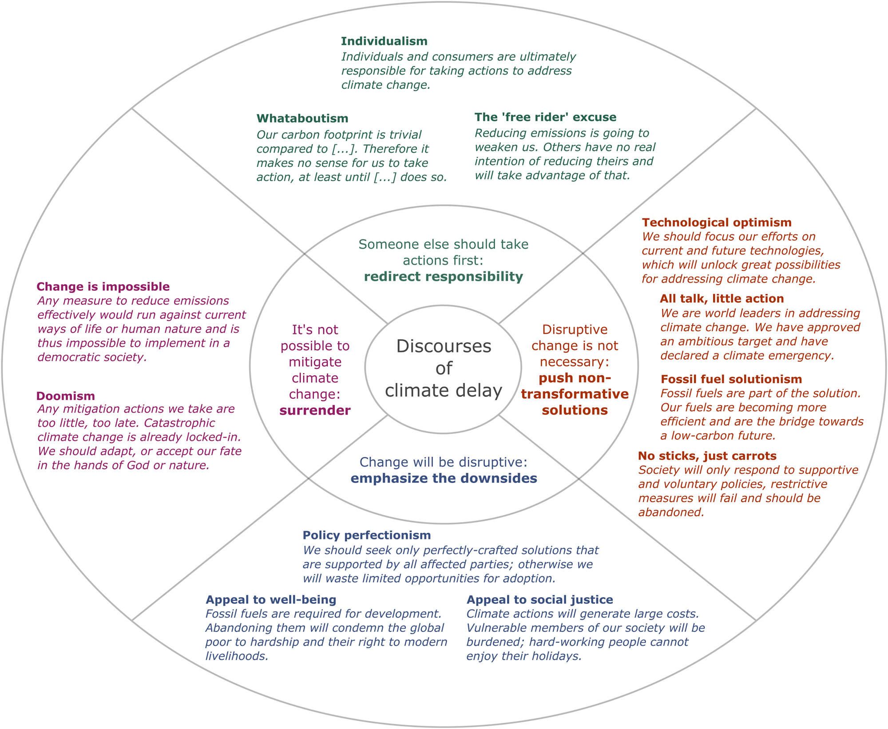
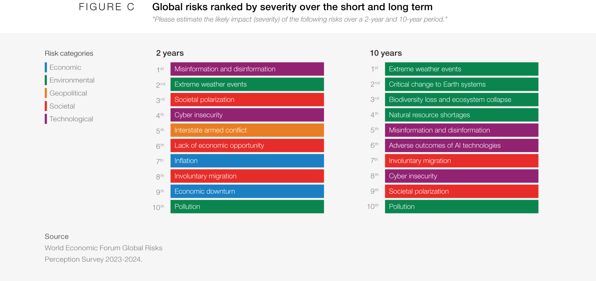
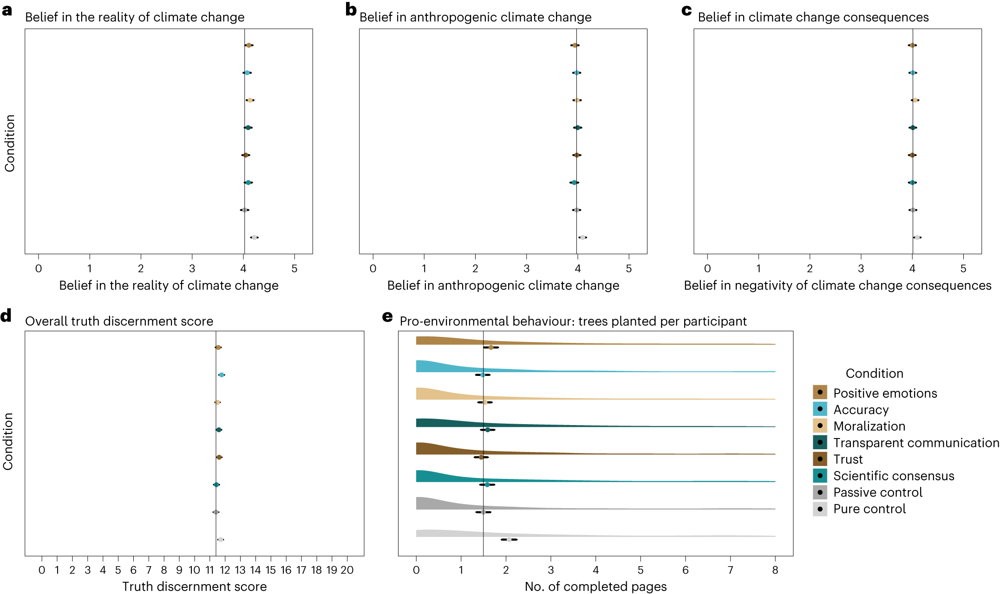

Climate change misinformation
Psychology of Climate Change Communication · Week 9
Dr. Viktoria Cologna and Dr. Jan Pfänder
Two weeks ago

Reto Knutti told us what it is like to be a climate scientist in public: he is attacked personally and discredited, rather than argued with.
. . .
Where do these attacks come from, and what do they do?
Not an isolated experience

A recent book by two scientists who have lived through such attacks: climate and health action are “hampered by a common threat: politically and ideologically motivated opposition to science”.
How common are such attacks?
Of 468 climate scientists surveyed in 2023, 39% had experienced online harassment or abuse related to their research. Among those who appear in the media at least once a month, 73% had. (Global Witness, 2023)
Of 321 scientists who spoke publicly about COVID-19, 15% had received death threats and 22% threats of physical or sexual violence. (Nogrady, 2021)
Michael Mann sued two writers for defamation over attacks on his work. A jury found for him twelve years later.
Overview
- A short history of organised climate change denial
- Recognising misinformation
- How big is the problem?
- Countering misinformation
1. A short history of organised climate change denial
The Exxon case, which you saw last week

From 1977 on, Exxon’s own scientists projected the warming accurately. The company’s newspaper advertisements expressed doubt about it.
. . .
“Whereas [academic and government] scientists worked to communicate what they knew, ExxonMobil worked to deny it.” (Supran et al., 2023; Supran & Oreskes, 2017)
Merchants of doubt

Exxon’s strategy of manufacturing doubt was borrowed from the tobacco industry: keep the public believing that the science is still open, so that regulation can wait.
. . .
A handful of politically connected scientists applied the same tactics, in turn, to tobacco, acid rain, the ozone hole and climate change.
Doubt as a political strategy
Advice to US Republican candidates by the pollster Frank Luntz, 2002:
“Should the public come to believe that the scientific issues are settled, their views about global warming will change accordingly. Therefore, you need to continue to make the lack of scientific certainty a primary issue in the debate.”
From “it’s not happening” to “solutions won’t work”

Discourses of climate delay
Discourses of climate delay are arguments that “accept the existence of climate change, but justify inaction or inadequate efforts”. (Lamb et al., 2020)

Where things stand today
On climate denial YouTube channels, “old denial”, the claim that climate change is not happening, not caused by us, or not bad, fell from 65% of claims in 2018 to 30% in 2023. (Center for Countering Digital Hate, 2024)
“New denial”, which instead attacks the science, the scientists and the solutions, rose from 35% to 70%.
Denial has not disappeared. It has changed its message.
2. Recognising misinformation
Some definitions
Misinformation is false or misleading information, regardless of whether anyone intended to mislead.
Disinformation is misinformation that is spread deliberately, to deceive.
Fake news imitates the form of news media content without its editorial process.
Recognising techniques
You do not need to know every false claim. Most misinformation relies on a small set of rhetorical techniques, and those can be learned.
One list of five goes by the acronym FLICC: fake experts, logical fallacies, impossible expectations, cherry picking, conspiracy theories. (Cook, 2020)
FLICC with climate examples
| Technique | Typical climate claim |
|---|---|
| Fake experts | “Thousands of scientists signed a petition against the climate consensus.” |
| Logical fallacies | “The climate has always changed, so humans cannot be the cause now.” |
| Impossible expectations | “If they can’t forecast next week’s weather, how can they predict 2100?” |
| Cherry picking | “There has been no warming since the record year of 1998.” |
| Conspiracy theories | “Climate scientists fake data to keep their grants.” |
Techniques online
A second list, written for online misinformation, names six techniques: impersonation, emotional content, polarisation, conspiracy, discrediting, trolling. (Roozenbeek et al., 2022; Roozenbeek & van der Linden, 2019)
It overlaps with FLICC, and we will meet it again in the inoculation games in part 4.
Do such techniques make false claims more convincing?
Not much. In five EU countries, adding most of these techniques to a claim about climate change made people agree with it less. (Nohlen & Bruns, 2025)
The main reason: people agreed less with true claims written in this style.
Spot the technique (pairs, 4 minutes)
The next slide shows five claims about climate change. For each one, decide with your neighbour which technique it uses, from FLICC or from the discourses of delay.
Five claims
“Switzerland causes a tiny fraction of global emissions. Nothing we do matters until China and India act.”
“Scientists were predicting an ice age in the 1970s. Now it is warming. They clearly have no idea.”
“Even the IPCC admits that the models have uncertainties. Until the science is certain, we should not wreck the economy.”
“Of course the climate scientists say it is a crisis. Their funding depends on it.”
“The real solution is carbon capture and new nuclear. Cutting emissions today is pointless when technology will fix it.”
Repetition makes claims feel true
A claim seen before is judged as more accurate than a new one, even when it is false. (Dechêne et al., 2010; Pennycook et al., 2018; Pillai & Fazio, 2021)
This illusory truth effect is one of the better-replicated findings in misinformation research.
3. How big is the problem?
What decision makers think

Has the supply of doubt worked? What the public believes
In the EU, the share who say climate change is mostly natural rose from 26% in 2021 to 35% in 2024. (European Commission, Directorate-General for Research and Innovation, 2021, 2025; Rutjens et al., 2022)
Is misinformation the cause? That is what two camps of researchers disagree about.
The case for alarm
Today’s reading, Stephan Lewandowsky’s review of climate disinformation, describes “an environment of rhetorical adversity in which disinformation abounds”. (Lewandowsky, 2021)
In 12 countries, reading real climate disinformation lowered belief in climate change, made people feel less positive about reducing emissions, and reduced pro-environmental behaviour. (Spampatti et al., 2023)
The case for calm
Public debate makes “sweeping claims about the effects of exposure to false content online that are inconsistent with much of the current empirical evidence”. (Budak et al., 2024)
The studies they review show “a pattern of low exposure to false and inflammatory content that is concentrated among a narrow fringe”.
Poll 3
What share of what people consume online is misinformation, according to studies that measure actual behaviour (browsing histories, feeds)?
- less than 2%
- 2 to 10%
- 10 to 25%
- more than 25%
How much misinformation is there?
Across 443 studies that measured actual behaviour, misinformation is a median 1.3% of what people consume online. (Altay, 2026b)
The top 1% of users account for 70% of misinformation sharing or exposure.
Asked in surveys, however, 58% of respondents say they have seen misinformation.
And for climate change specifically?
In eight countries, 25% said they had seen false or misleading information about climate change in the past week. (Ejaz, Mukherjee, et al., 2025)
How much people trusted their sources of information about climate change predicted belief in climate misinformation much better than how much news they consumed. (Ejaz, Altay, et al., 2025)
Are people gullible?
Across 67 experiments in 40 countries, people rated true news as much more accurate than false news. When they made mistakes, they more often doubted true news than believed false news. (Pfänder & Altay, 2025)
Most people say they would have to be paid to share fake news. (Altay et al., 2022)
Alarm has costs of its own
Seeing a higher share of false news made people reject more true news and trust the news less. (Altay et al., 2025)
Alarmist articles about disinformation raised support for restricting speech. (Jungherr & Rauchfleisch, 2024)
“Misinformation often reflects, rather than causes, underlying sociopolitical issues.” (Altay, 2026a)
The reply from the alarmed camp
“The fight against misinformation is valid, warranted and urgently required.” (U. Ecker et al., 2024; U. K. H. Ecker et al., 2025)
The prevalence of misinformation “is nonnegligible if reasonably inclusive definitions are applied”.
Much of the disagreement is about definitions. Fake news from fringe websites is rare. Misleading claims by politicians, think tanks and mainstream outlets are not counted in most prevalence studies.
For climate change: a well-organised supply of doubt, meeting a demand from people whose worldview it fits.
Who is vulnerable? Worldview first
Across 56 nations, when predicting belief in climate change, education, knowledge and experience of extreme weather were “overshadowed in predictive power by values, ideologies, worldviews and political orientation”. (Hornsey et al., 2016; Lewandowsky & Oberauer, 2021)
Today’s reading: climate change “challenges our cognitive abilities and the worldviews of many”.
Accepting science in general, rejecting specific findings
When US participants were shown the scientific answer to basic science questions, 95% accepted it. Among those who said they had no trust in science at all, 87% still accepted it. (Pfänder et al., 2025)
People reject the specific claims that conflict with their worldview, while accepting science in general.
Lazy or biased?
“Susceptibility to fake news is driven more by lazy thinking than it is by partisan bias per se.” (Pennycook & Rand, 2019)
But paying people for accurate answers reduced partisan bias, the tendency to doubt true news from the other political side, by about 30%. (Rathje et al., 2023)
Who is vulnerable? Age
Only 8.5% of US Facebook users shared any fake news in 2016. (A. Guess et al., 2019)
Users over 65 shared nearly seven times as much as the youngest age group. (Brashier & Schacter, 2020)
Who is vulnerable? Putting it together
A meta-analysis of 31 experiments with 11,561 US participants: people judged both true (69%) and false (67%) headlines well above chance. (Sultan et al., 2024)
Older age, higher analytical thinking and identifying as a Democrat went with a better ability to tell true from false news.
News that fitted one’s ideology, and news that felt familiar, went with naïvety: a tendency to call news true.
Showing the source next to the headline improved judgements, most for Republicans.
4. Countering misinformation
A toolbox
One review sorts the tools into three families: nudges change the situation in which people read and share, boosts build people’s own skills, and refutation strategies correct false claims directly. (Kozyreva et al., 2024)
Today we look at four tools: debunking, consensus messaging, prebunking, accuracy prompts.
1. Debunking
Corrections work, but rarely completely. People continue to rely on information they know has been corrected: the continued influence effect. (Chan et al., 2017; Lewandowsky et al., 2012; Walter & Murphy, 2018)
“Debunking can often correct factual misperceptions but may not shift attitudes or policy preferences.” (Lewandowsky, 2021)
The backfire effect, which mostly does not appear
An influential 2010 study found that corrections could increase a misperception among the group most committed to it. (Nyhan & Reifler, 2010)
Later attempts to reproduce this, across 52 issues and more than 10,000 participants, “found no corrections capable of triggering backfire”. (Wood & Porter, 2019)
How to debunk
The recommended order: state the fact, warn that a myth is coming, explain the fallacy behind the myth, end with the fact again. (Lewandowsky et al., 2020)
Does repeating the myth in order to correct it backfire? It seems not. (U. K. H. Ecker et al., 2020)
In public debates with science deniers, correcting the facts and exposing the technique both had positive effects on the audience. Not responding was the worst option. (Schmid & Betsch, 2019)
Debunking many people at once: dialogues with an AI
A short personalised conversation with an AI reduced belief in conspiracy theories by about 20%, for at least two months. (Costello et al., 2024)
“Many conspiracy theory believers can revise their views if presented with sufficiently compelling evidence.”
2. Consensus messaging
Telling people that nearly all climate scientists agree raises their estimate of the consensus, and with it belief in climate change. (van der Linden et al., 2015)
In 27 countries, the message “corrects misperceptions and slightly increases climate change beliefs and worry but not support for public action”. (Većkalov et al., 2024)
3. Prebunking, or psychological inoculation
Expose people to a weakened dose of a persuasive attack, together with a refutation, and they build “mental antibodies” against the full attack later.
A fake petition of scientists disputing the consensus, like the one in the FLICC table, cancelled the effect of the consensus message. A warning beforehand that politically motivated groups use misleading tactics preserved most of that effect. (Cook et al., 2017; Van der Linden et al., 2017)
Inoculation as a game
In the game Bad News, players run a fake news site and use the six online techniques from part 2. Afterwards, they rate manipulative headlines as less reliable. (Basol et al., 2020; Roozenbeek & van der Linden, 2019)
The effect decays within two months unless players are reminded of what they learned. (Maertens et al., 2021)
Short inoculation videos shown as YouTube ads to millions of users improved recognition of these techniques. (Roozenbeek et al., 2022)
Does inoculation hold up?
One reanalysis of the game studies: Bad News and similar games did not improve people’s ability to tell true from false news. They made people more sceptical of all news. (Modirrousta-Galian & Higham, 2023)
A later meta-analysis of 33 experiments: games and videos did improve this ability, without making people doubt everything. (Simchon et al., 2025)
Inoculation against climate disinformation, in 12 countries
The 12-country study from part 3 also tested six inoculation strategies on 6,816 participants, who then read twenty pieces of real-world climate disinformation.
“While exposure to disinformation had strong detrimental effects […], we found almost no evidence for protective effects of the inoculations.” (Spampatti et al., 2023)

4. Accuracy prompts
Most people do not want to share false news. They just do not think about accuracy at the moment of sharing.
A simple reminder to think about accuracy improved the quality of what people went on to share, also in a field experiment on Twitter. (Pennycook et al., 2021)
Comparing interventions in one experiment
One large study compared nine interventions on 33,233 participants: “a wide variety of interventions can improve discernment”, that is, the ability to tell true from false news. (Fazio et al., 2024)
The effects are real but modest, and they were measured only minutes after the intervention.
The side effect: scepticism towards true news
Fact-checks, media literacy tips and news coverage of misinformation were tested in the United States, Poland and Hong Kong with 6,127 participants. (Hoes et al., 2024)
“While all interventions successfully reduce belief in false information, they also negatively impact the credibility of factual information.”
Making people more sceptical is easy. Making them better at telling true from false is the hard part.
A different goal: trust in true news
Tips that encouraged trust in reliable news improved people’s ability to tell true from false news as much as tips that encouraged scepticism, and they also increased trust in traditional media. (Altay et al., 2024)
“There is more room to increase the acceptance of true news than to reduce the acceptance of fact-checked false news.” (Pfänder & Altay, 2025)
Beyond the individual
Individual-level tools have modest effects that decay. Two structural measures remain.
Hold platforms accountable for the narrow fringe of users among whom, as we saw in part 3, exposure to misinformation concentrates. (Budak et al., 2024)
Address the organised supply of doubt from part 1.
Make your own misinformation (10 minutes)
Option A: in pairs, on one phone, play Bad News at getbadnews.com or getbadnews.de. Stop after your third badge.
Option B: in pairs, write one social media post against climate action using one technique from FLICC or one discourse of delay. Swap with the next pair. Can they name the technique?
To take home
Companies that knew the science funded doubt about it. The message has shifted from denying the problem to attacking the solutions.
Misinformation can be recognised by its techniques, and those can be taught.
To take home
Fake news is rare, and people are more sceptical than gullible. For climate change, the problem is an organised supply of doubt meeting a worldview-shaped demand.
Debunking, consensus messaging, prebunking and accuracy prompts all help somewhat. Effects are modest, they decay, and they do not replace structural measures.
What today’s reading concludes
- Climate change challenges our cognitive abilities and the worldviews of many.
- Communication takes place in an environment of adversity.
- Information about the scientific consensus, and about why climate change occurs, can enhance acceptance of science.
- Culturally aligned messages and messengers are more likely to succeed.
- Inoculation can defang misinformation before it is encountered.
Summary points, shortened, from Lewandowsky (2021)
References